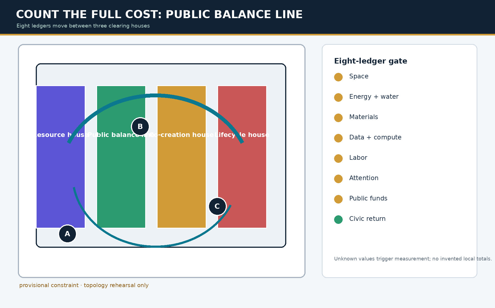
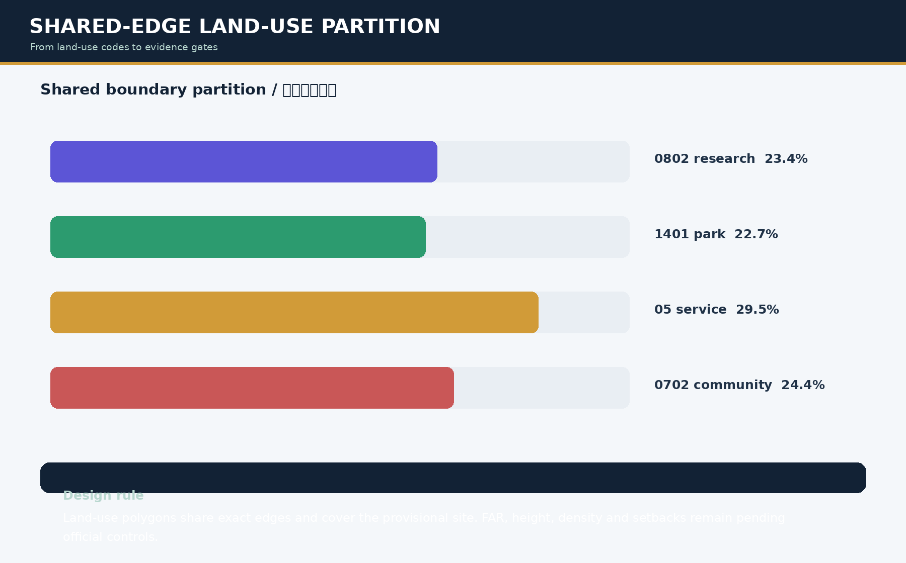
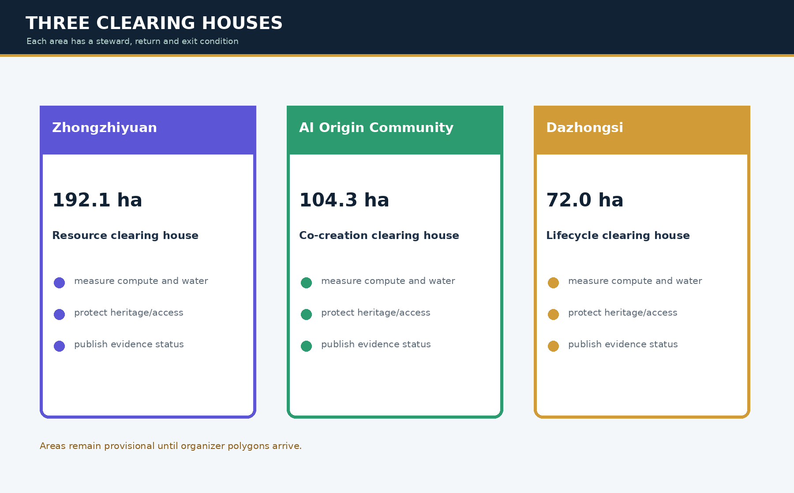
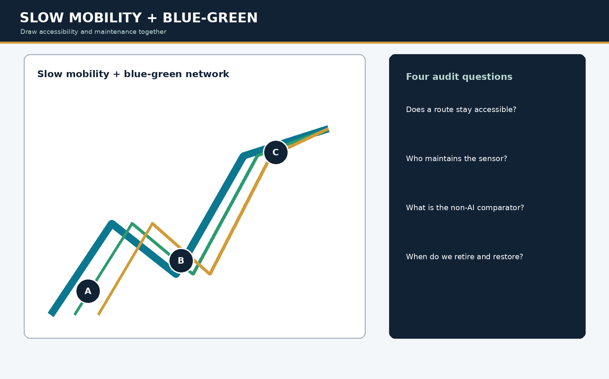
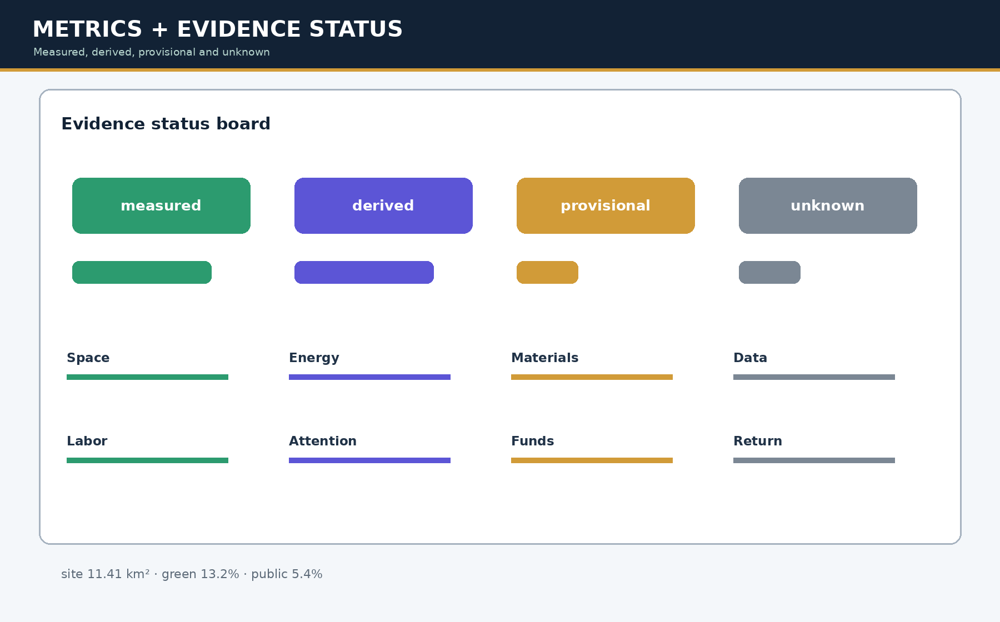

One Public Balance Line, three clearing houses and four public windows; `PUBLIC-003` is a provisional concept anchor.
THE DESIGN JUDGMENT IN 20 SECONDS
Build the Public Balance Line first; AI earns one reversible trial cell only through a net public return.
The line connects three clearing houses and four public windows. Continuous passage, staffed service, quiet rest and maintenance access are delivered before automation. The current tabletop candidate borrows one relative trial cell, adds two protected-use cells, and exits with equipment at zero while the public increment remains.

It borrows one reversible relative cell only after accessibility, maintenance and affected-group human gates.
A night-shift maintainer who does not register or use face recognition still passes, finds staffed help, rests and completes a handover.
The trial cell returns to zero; one added passage cell and one quiet-rest cell remain. Cells are not area, capacity or field performance.
Affected-person journey | Conceptual role, not a field interview
1Ordinary staffed baseline
No registration or face recognition; continuous passage reaches staffed service and maintenance access.
2AI candidate
One trial cell is borrowed while one passage and one quiet-rest cell are added; no protected use decreases.
3Exit and retention
Equipment leaves; added passage and rest remain. Accessibility, ownership, fire safety and consent still require field review.
Originality boundary: staffed fallback, reversible AI and civic return all have precedents. This package claims only the same-denominator relative-cell test for net return and exit retention. Trace: three-state data · narrative and evidence ceiling
Spatial Balance Sheet | What does public space receive for one AI cell?
Compare the ordinary staffed baseline, AI candidate, and exit together. The twelve cells share a relative denominator; they are not metres, square metres, capacity, or observed footfall. `PUBLIC-003` remains a provisional concept anchor.
Human gate: accessibility co-reviewer + site-maintenance role + affected-group observer · three-state data · six-fixture verifier
Refusal Desk | Recalculate a closeout decision
Select the complete receipt or remove one record. The interface calculates from this package's twelve-field contract and shows the owner, affected people, spatial consequence, staffed fallback, and repair or retirement action.
Trace: 24 offline fixtures · proposal and evidence boundary · structured interface data
Responsibility Transfer Yard | Who receives each cost?
Select a cost class to inspect its originator, RACI receiver, affected groups, equivalent non-AI route, spatial consequence, and acceptance, refusal, and recovery evidence. Without receiver acceptance, liability stays with the originator.
Responsibility interfaces7
Missing-field fixtures7
Expected rejection match100%
Field acceptanceUnknown
Trace: seven contracts and fixtures · local verifier · status: protocol only / field unknown
Overview map and evidence drawings
Scope · Land use · Key areas · Mobility · Blue-green · Buildings · Renewal projects · AI scenarios · Core metrics · Task coverage · Self-check · Sources · Assumptions




Core metrics
site_area_sqm11412825.386
green_ratio0.132
public_space_ratio0.054
key_area_count3
Closeout Receipt
Every scenario leaves an inspectable receipt before expansion. Any co-review role may refuse to sign; refusal cannot silently become “pass later.”
1 · Set the comparatorAuthorization, staffed service, seven costs, civic-return threshold
2 · Sign togetherMaintainer, data/rights, accessibility, affected groups
3 · Close the accountProfessional review, or stop, hand over, repair/retire
Offline cases24
Missing-evidence stops12
Expected-decision match100%
Audit completeness100%
Evidence boundary: all 24 cases are synthetic offline tabletop records and use zero real personal data. Field performance, public acceptance, feasibility and approval remain unknown.
Three clearing houses
Resource clearing house / ZhongzhiyuanCo-creation clearing house / AI OriginLifecycle clearing house / DazhongsiPublic balance line
Limitations and next trigger
Official polygons, statutory controls, ownership, heritage, utilities, energy and workforce baselines are not supplied. Replace provisional geometry and recalculate all spatial ledger denominators, figures, HTML, PDFs and hashes.